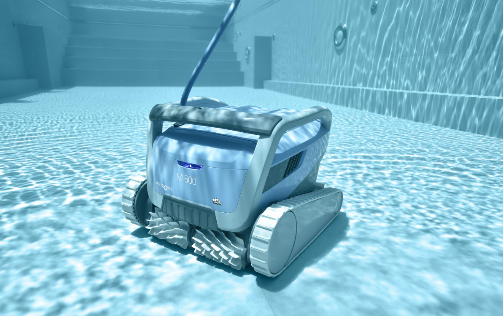

Entretien & nettoyage d'une piscine
Faut-il acheter un robot de nettoyage pour sa piscine ?
Sommaire
- Qu’est-ce qu’un robot de piscine ?
- Comment fonctionne un robot de piscine ?
- Pourquoi utiliser un robot de piscine ?
- Quels sont les différents types de robots de piscine ?
- Comment choisir son robot de piscine ?
- Comment entretenir son robot de piscine ?
Les choses ont changé depuis que le robot de piscine a été inventé en 1951 par un ingénieur sud-africain. Vendu pour la première fois en 1974, cet appareil a gardé pour ambition de faciliter les séances de nettoyage et d’entretien de la piscine. Le robot de piscine est ainsi devenu l’outil incontournable pour garantir la propreté d’une piscine.
Qu’est-ce qu’un robot de piscine ?
Le robot de piscine est un engin dont le rôle est d’assurer le nettoyage d’un bassin sans intervention humaine. Il en existe plusieurs modèles qui, grâce à leur autonomie, vont agir aussi bien sur la surface de l’eau que sur les parois et le fond du bassin. Certains modèles sont même capables de contourner les éventuels obstacles, franchissant par exemple des escaliers. Les appareils les plus avancés disposent de fonctionnalités de programmation. Dans tous les cas, la machine est adaptée pour nettoyer les piscines traditionnelles, les piscines hors sol, ainsi que les piscines en bois, en plastique ou en acier.
Depuis l’invention de cet accessoire, il ne cesse d’évoluer. Si vous souhaitez acquérir l’un de ces appareils, renseignez-vous sur le site de Jean-François Stassen en le contactant via son formulaire de contact. Notez que le fonctionnement général des robots de piscine demeure le même, malgré les différences de technologie.
Comment fonctionne un robot de piscine ?
Le robot de piscine est doté d’un ou de plusieurs moteurs qui sont actionnés dès qu’il est mis en marche. Grâce à ses roues et aux différentes brosses dont il dispose, il nettoie les saletés incrustées sur le fond et les parois du bassin.
Disposant d’un système d’aspiration et de filtration intégré, et totalement indépendant de celui de la piscine, il aspire les microparticules et les bactéries présentes dans l’eau. De ce fait, l’eau entrant dans le robot est filtrée et épurée, puis en ressort plus propre.
es saletés recueillies sont mises dans un sac conçu spécialement pour cela, et qui est intégré au dispositif. Cette poubelle intégrée doit être vidée idéalement après chaque cycle de nettoyage.
Notez que la nature, la forme et la taille du bassin sont très importantes au moment de choisir le robot de piscine. Il faut en effet que celui-ci soit parfaitement adapté au type de piscine pour effectuer un nettoyage efficace.
Pourquoi utiliser un robot de piscine ?
Lorsque l’entretien de la piscine est négligé, celle-ci peut rapidement se transformer en bouillon de culture. Feuilles sèches, algues, microbes et bactéries peuvent en effet envahir le bassin qui devient alors inexploitable. Une eau de piscine souillée est néfaste pour la santé, en particulier pour la peau et pour les yeux. Par ailleurs, une eau de piscine sale entraine des dépôts sur le fond et sur les parois. Ces derniers peuvent occasionner des glissades et causer des incidents ou des blessures plus ou moins graves.
L’intérêt d’utiliser un robot de piscine est donc de supprimer tous les éléments polluants de l’eau du bassin afin qu’il demeure sain et sans danger. Si l’usage du robot de piscine est recommandé par les professionnels du secteur, c’est parce qu’il offre divers avantages dont les principaux sont la performance et le gain de temps. Certains modèles peuvent en outre :
- être programmés pour fonctionner même en votre absence
- être dotés de brosses amovibles qui s’adaptent en fonction de la nature du fond de votre bassin (béton, PVC, coques polyester, etc.)
- être dotés de différents niveaux de filtrage
Ce n’est donc pas un luxe d’acquérir un robot de piscine, mais plutôt une nécessité. Discret, pratique, et facile à utiliser, cet engin maintient le niveau d’hygiène de votre piscine en effectuant un nettoyage complet et précis.
Outre le nettoyage, certains des appareils les plus performants vous donnent des indications sur le taux de chlore et le pH de l’eau, ainsi que la température de celle-ci. Cela vous permet de mesurer la qualité de votre eau de piscine et de savoir à quel moment la traiter.
Quels sont les différents types de robots de piscine ?
Il existe trois grands types de robots de piscine.
-
Le robot de piscine à pression
Il se sert des différents niveaux de pression de l’eau pour évoluer et désinfecter les parois et le fond du bassin. Pour plus d’efficacité, ce type d’appareil doit être renforcé avec un système de suppresseur ou un système de pompe, afin d’être totalement autonome.
-
Le robot piscine hydraulique
Il doit être raccordé au système de filtration de la piscine. Contrairement aux autres modèles, il ne dispose pas de brosses intégrées. Il nettoie juste les saletés présentes dans l’eau. Il est recommandé pour les bassins de petite taille, et qui sont peu profonds. Le nettoyage des parois devra être effectué à la main.
-
Le robot piscine électrique
Totalement autonome, c’est l’appareil le plus performant. À l’aide de son moteur (ou de ses moteurs), il nettoie la piscine en profondeur en effectuant un quadrillage précis. Ce type de robot est parfait pour les grandes piscines.
Outre ces 3 types de robots, il en existe un autre, de technologie plus récente : les robots de piscine producteurs de chlore. Ces modèles sont dotés d’un dispositif électrolyseur de sel. Durant l’usage du robot, l’eau circule à l’intérieur de cellules d’électrolyses. Elle ressort avec une teneur en sel allant de 3 à 5 kg/m³. La saveur salée est quasiment indétectable avec ces doses de sel. Ce type de robot autonome est idéal pour les personnes allergiques au chlore.
Comment choisir son robot de piscine ?
Pour bien choisir son robot de piscine, il est essentiel de prendre en compte un certain nombre de critères que nous vous présentons ci-dessous.
-
La puissance d’aspiration
Elle varie entre 15 m³ et 20 m³ par heure selon les modèles. Ceux-ci comportent différentes technologies d’aspiration qui sont plus ou moins efficaces. Pour bénéficier d’une bonne puissance d’aspiration, il est recommandé d’opter pour un modèle d’aspiration cyclonique.
-
Les cycles de nettoyage
Normalement, la durée du cycle de nettoyage est de 2 h à 2 h 30. Toutefois, certaines séances de nettoyage peuvent aller jusqu’à 4 h. Les modèles hydrauliques en particulier se distinguent par leur durée relativement longue.
-
La praticité et les accessoires
Pour faciliter l’utilisation de votre robot de piscine, intéressez-vous aux aspects pratiques tels que la longueur du tuyau et le poids du robot. En général, plus un robot est lourd et volumineux, plus il est puissant.
En ce qui concerne les accessoires, ils peuvent être vendus avec le robot ou non. Ils complètent votre appareil pour optimiser le nettoyage. On retrouve par exemple les télécommandes de direction, les filtres, les pneus et les brosses.
-
Le prix
Pour les consommateurs, le prix est souvent déterminant dans le choix d’un produit. Pour les robots de nettoyage autonomes, les prix varient en fonction des modèles.
Ainsi, les prix des modèles hydrauliques varient entre 300 et 500 euros en entrée de gamme. Les modèles à pression coûtent entre 500 et 800 euros, toujours dans la même gamme. Enfin, les modèles électriques coûtent entre 800 et 1500 euros. Vous pouvez également trouver des modèles haut de gamme qui coûtent plusieurs milliers d’euros.
-
La garantie
Nous vous recommandons de vous renseigner sur la durée de garantie offerte par le constructeur de votre appareil. Selon les modèles et les fabricants, le délai de garantie oscille entre 2 et 5 ans. Durant cette période, vous avez droit à une couverture pour certains défauts liés à l’appareil. Autrement, certains constructeurs acceptent de faire une extension de garantie moyennant un paiement supplémentaire.
Comment entretenir son robot de piscine ?
Entretenir votre robot de piscine convenablement vous permettra de l’utiliser pendant longtemps. Il est vivement conseillé de suivre les recommandations du fabricant en ce qui concerne l’entretien.
De façon générale, il vous faudra nettoyer le filtre assez régulièrement. Par ailleurs, il se peut que vous deviez changer les brosses. La fréquence de changement est d’une fois par an pour les brosses en mousse et d’une fois tous les deux ans pour les brosses en PVC.
Enfin, veillez à bien surveiller les hélices, les roues, les chenilles ainsi que les courroies de transmission. Nettoyez-les ou changez-les si vous constatez des signes d’usure.
Pour terminer, si vous souhaitez conserver l’état de pureté de votre eau de piscine et éviter par la même occasion la prolifération des microbes, l’achat d’un robot de piscine est indispensable. Vous devez seulement veiller à bien choisir votre machine afin qu’elle soit adaptée à votre piscine.
Pour plus d'informations, n'hésitez pas à nous contacter !
Articles récents

Par J-F.Stassen

Par J-F.Stassen

Par J-F.Stassen

Par J-F.Stassen